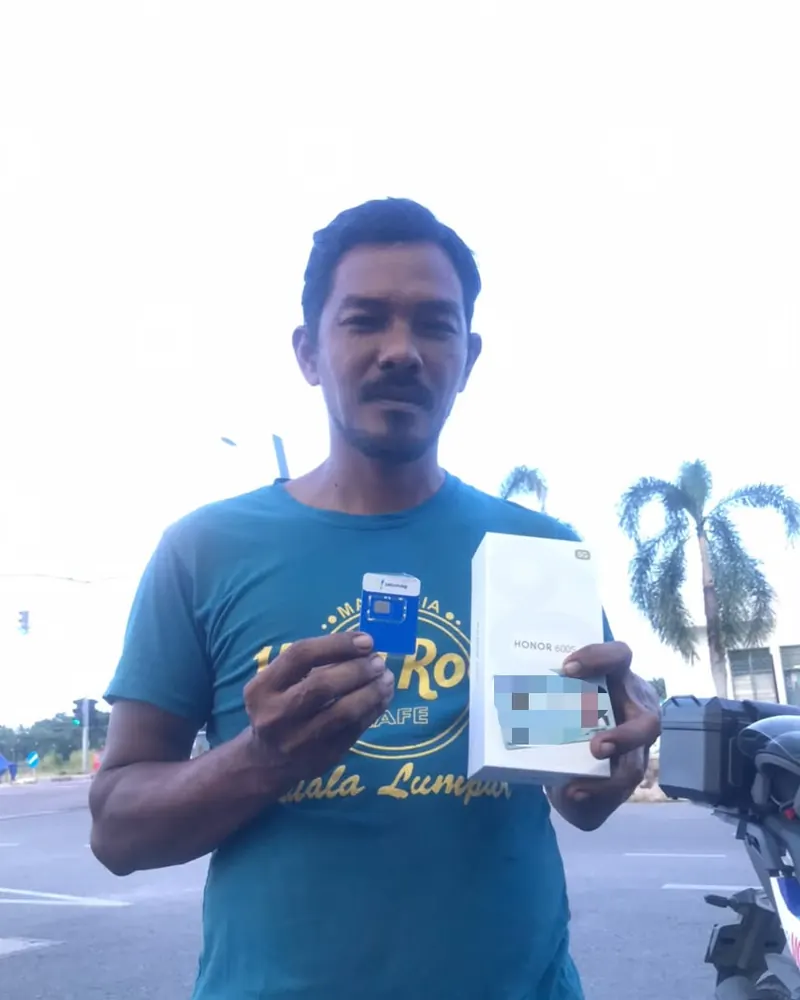

Line Phone Paling OK di Kelantan: Panduan Ikut Kawasan & Cara Atasi Line Lemah

"Line apa yang OK kat sini?" — soalan biasa dari pelanggan kami, terutama yang baru pindah ke Kelantan. Hakikatnya, line paling OK berbeza ikut kawasan. Bandar seperti Kota Bharu biasanya ada lebih banyak pilihan rangkaian yang kuat, manakala kawasan berbukit dan pedalaman seperti sebahagian Gua Musang memerlukan lebih berhati-hati sebelum memilih.
Kota Bharu: banyak pilihan, utamakan isyarat dalam bangunan
Di kawasan bandar, kebanyakan telco utama mempunyai liputan 4G dan liputan 5G semakin meluas. Cabaran sebenar biasanya isyarat di dalam bangunan — rumah teres, kedai deret atau bilik di bahagian belakang. Jika anda kerap guna data di rumah, pertimbangkan juga internet rumah 5G supaya semua ahli keluarga dapat WiFi.
Machang: uji di rumah dan di laluan harian
Untuk kawasan pinggir bandar dan kampung di sekitar Machang, isyarat boleh berbeza antara pekan dan kampung. Uji line di rumah dan sepanjang laluan harian anda — contohnya jalan ke tempat kerja — sebelum ambil kontrak.
Gua Musang: jangan terus ambil kontrak
Kawasan berbukit, ladang dan petempatan pedalaman lebih mencabar untuk semua rangkaian. Nasihat kami:
- Cuba prabayar dahulu selama seminggu dua sebelum langgan pascabayar berkontrak.
- Tanya jiran setempat — pengalaman mereka paling tepat untuk kawasan anda.
- Jika telefon menyokong dual-SIM, guna dua rangkaian berbeza supaya ada sandaran bila satu line lemah.
- Untuk internet rumah, semak liputan ikut alamat sebelum mendaftar.
7 tip sebelum salahkan telco
Kadangkala masalah bukan pada rangkaian, tetapi pada tetapan telefon atau simkad. Cuba langkah ini dahulu:
- Mod kapal terbang — hidupkan 10 saat, kemudian matikan untuk sambung semula ke menara terdekat.
- Mulakan semula telefon.
- Semak mod rangkaian — pastikan ditetapkan kepada 5G/4G (auto), bukan 3G/2G sahaja.
- Hidupkan VoLTE / panggilan 4G jika ada pilihan — kualiti panggilan biasanya lebih baik.
- Kemas kini perisian telefon.
- Semak simkad — simkad yang sangat lama atau rosak boleh menjejaskan isyarat; tukar simkad baharu dengan nombor sama.
- Cuba simkad di telefon lain — untuk pastikan masalah pada line atau pada telefon.
Tak pasti? Bawa telefon dan MyKad ke mana-mana cawangan Asia Berkat — staf kami bantu semak.
Bila patut tukar telco?
- Isyarat lemah di rumah atau tempat kerja walaupun sudah cuba semua tip di atas.
- Data selalu perlahan pada waktu biasa anda guna.
- Bil lebih mahal berbanding pelan lain dengan data yang sama atau lebih.
Tukar telco tak perlu tukar nombor — gunakan pindah nombor (port-in). Sesetengah pelan juga datang dengan telefon 5G RM0, contohnya U Mobile ULTRA Postpaid 68.
Cawangan Asia Berkat di Kelantan
- Kota Bharu (Beris Jejawi) — Lot 403, Kg Beris Jejawi, Jalan Padang Tembak, Taman Orkid
- Kota Bharu (Kemumin) — Lot 1902-2, Kampung Kemumin, Jalan Sultanah Zainab II
- Machang — Lot 2191A, Kg Desa Harapan, Kg Air Belaga
- Gua Musang — No 11, RKT Kesedar Paloh 1
Buka 9:00 pagi – 6:00 petang setiap hari, kecuali Jumaat.
Soalan lazim
Line phone mana paling OK di Kelantan?
Ia bergantung pada kawasan anda. Di bandar seperti Kota Bharu, kebanyakan telco utama mempunyai liputan baik, manakala di kawasan pedalaman seperti sebahagian Gua Musang, lebih baik uji dengan prabayar dahulu dan tanya pengalaman jiran sebelum langgan.
Kenapa line saya lemah di dalam rumah?
Dinding dan struktur bangunan boleh melemahkan isyarat. Cuba mod kapal terbang, semak mod rangkaian 5G/4G, hidupkan VoLTE dan kemas kini telefon. Jika masih lemah, pertimbangkan telco lain atau internet rumah 5G.
Perlu tukar nombor kalau tukar telco?
Tidak. Gunakan pindah nombor (port-in) dan nombor anda kekal sama. Bawa MyKad ke cawangan Asia Berkat untuk dibantu.
Di mana kedai telco Asia Berkat di Kelantan?
Asia Berkat ada 4 cawangan: dua di Kota Bharu (Beris Jejawi dan Kemumin), satu di Machang (Kg Air Belaga) dan satu di Gua Musang (Kesedar Paloh 1). Buka 9:00 pagi hingga 6:00 petang setiap hari kecuali Jumaat.
Harga dan pelan seperti diiklankan oleh syarikat telco pada November 2026, tertakluk kepada perubahan, liputan dan semakan kelayakan. Sila sahkan dengan staf kami sebelum mendaftar.